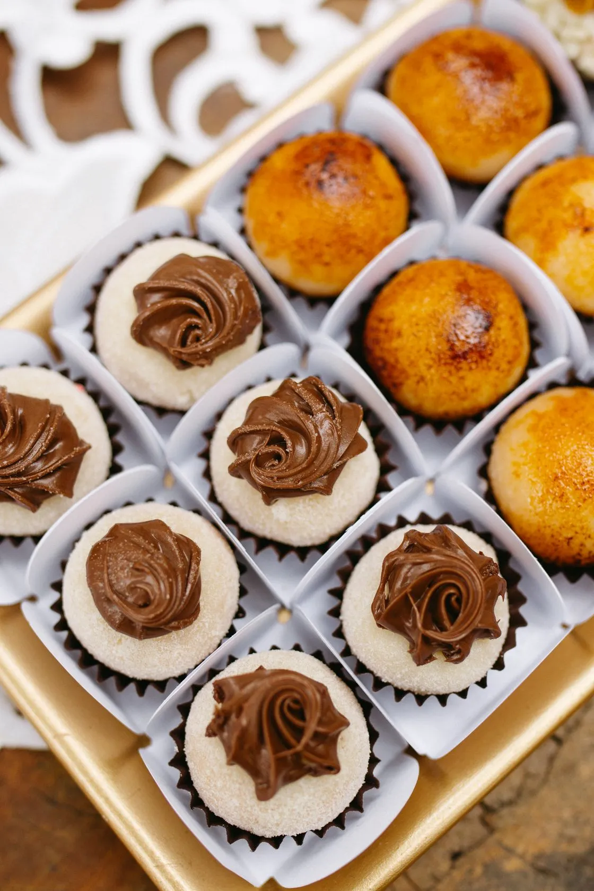
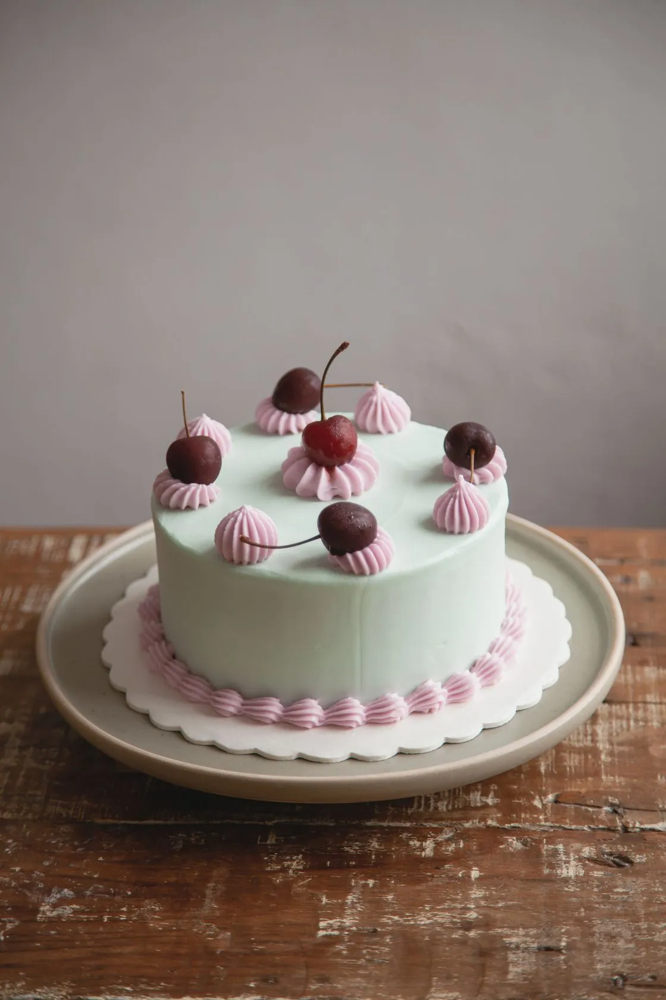
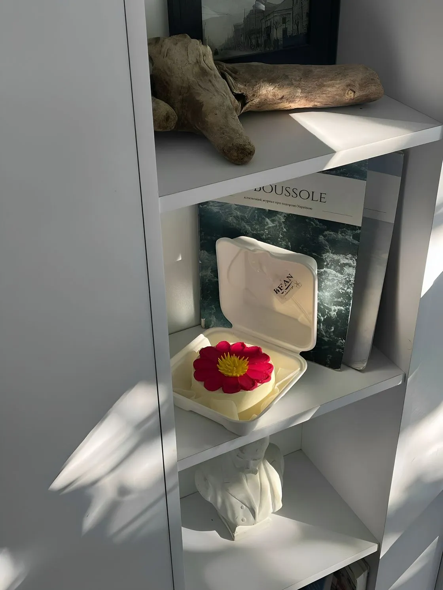
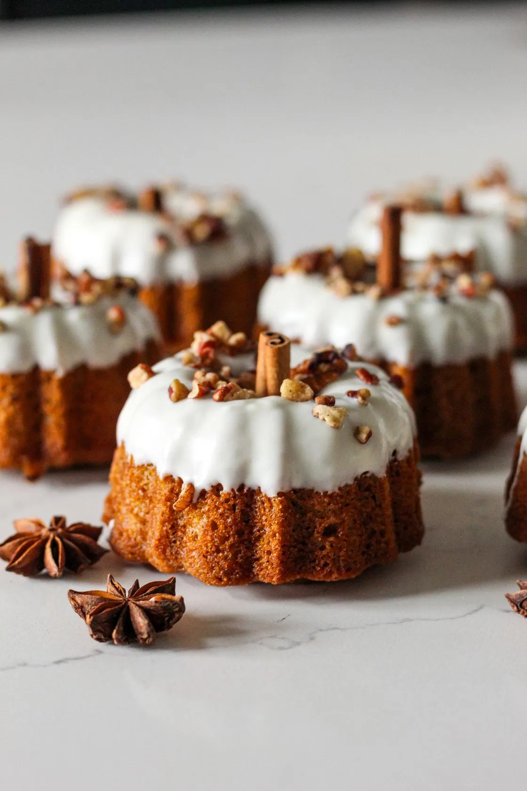

BEATO · LISBOA
La Santa
CONFEITARIA


BOLOS & DOCES ARTESANAIS
À mesa, La Santa.
Do bento cake à caixa de brigadeiros, escolha o que vai fazer parte da sua mesa.
Explorar a coleçãoA CONFEITARIA
A coleção.
Bolos

Bento cake

Mini cake
ENCOMENDAS PELO DIRECT
Sua seleção.
Escolha os doces, copie a mensagem e cole na conversa com a La Santa para combinar quantidade, data e valor.
Sobre o pedido.
Como consulto os preços?
Veja o destaque Preçário no Instagram ou peça um orçamento pelo direct.
Onde fica a La Santa?
No Beato, em Lisboa, Portugal. Combine os detalhes da encomenda pelo Instagram.